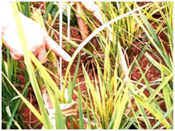
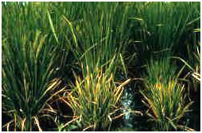

RICE :: VIRAL DISEASES :: RICE GRASSY STUNT DISEASE
Rice Grassy stunt disease - Rice grassy stunt tenuivirus
Symptoms
Plants are markedly stunted with excessive tillering and an erect growth habit. Leaves become narrow, pale green with small rusty spots. May produce a few small panicles which bear dark brown unfilled grains.
|  |  |
Pathogen
Rice grassy stunt tenuivirus, flexuous, filamentous 950-1350nm long x 6nm wide, ssRNA genome
Disease Cycle
Disease spreads by the brown plant hopper, Nilaparvata lugens, in a persistent manner having a latent period of 5 to 28 days in the vector. Ratoon crop and presence of vector perpetuate the disease from one crop to other.
Rice dwarf – Rice dwarf virus
Symptoms
Infected plants show stunted growth, reduced tillering and root system. Leaves show chlorotic specks turning to streaks along the veins. In early stage of infection no ear heads formed.
Pathogen
- The virus is spherical, 70nm diameter with an envelope, dsRNA genome.
Disease Cycle
Spreads by leafhopper feeding by Nephotettix cincticeps, Recllia dorsalis and
N. nigropictus in a persistent manner. The transmission is transovarial through eggs. Gramineous weeds Echinochloa crusgalliand Panicum miliaceaumserve as source of inoculum.
Management
- Destory weed host that serve as source of inoculum
- Spray Phosphamidon or Fenthinon 500 ml or Monocrotophos 1 lit/ha.